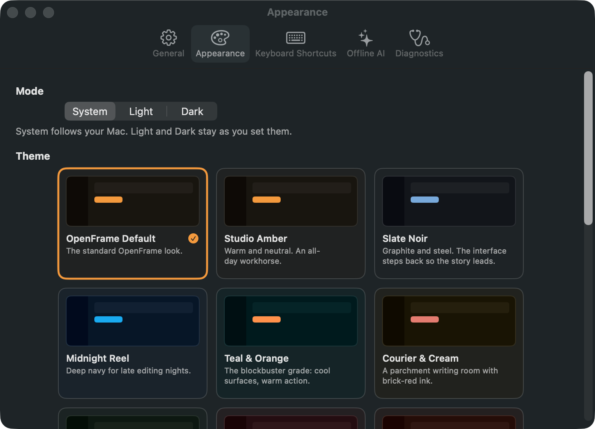

Settings · page 010 of 179 · window 760×548 pt · dark appearance (light version)
Reached from Settings: General by Appearance. Controls on this screen:
System (radiobutton)
Light (radiobutton)
Dark (radiobutton)
OpenFrame Default. The standard OpenFrame look. (button, theme-card-openframe-default)
Studio Amber. Warm and neutral. An all-day workhorse. (button, theme-card-studio-amber)
Midnight Reel. Deep navy for late editing nights. (button, theme-card-midnight-reel)
Cutting Room. Restful sage green for editors. (button, theme-card-cutting-room)
Velvet Curtain. Theatre burgundy and gold. Premiere night. (button, theme-card-velvet-curtain)
General (button)
Appearance (button)
Keyboard Shortcuts (button)
Offline AI (button)
Diagnostics (button)

ModeSystem follows your Mac. Light and Dark stay as you set them.ThemeOffline AIAppearance